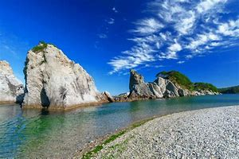

|  | 岩手で絶対に行くべき 観光スポット |
三陸復興国立公園・三陸ジオパークの中心に位置する、宮古の代表的な景勝地。
鋭くとがった白い流紋岩が林立し、一つ一つ違った表情を見せて海岸を彩ります。
松の緑と岩肌の白、海の群青とのコントラストはまさに一見の価値あり。
浄土ヶ浜の地名は、天和年間に宮古山常安寺七世の霊鏡竜湖が、「さながら極楽浄土のごとし」
と感嘆したことから名付けられたと言われています。
岩手山を背景にした、雄大な自然の中にある観光スポット小岩井農場「まきば園」。
ガイド付きツアーや体験アトラクション、農場産の素材に
こだわった食事メニューやお土産など
お子様から大人までお楽しみいただけます。
岩手県一関市にある磐井川中流の渓谷。栗駒山（須川岳）を水源とする。
全長2キロメートルで奇岩や怪岩に富む。
1927年（昭和2年）に国の名勝及び天然記念物に指定された。
地上に降りた円盤のような形をした展望台からは、
市街地や岩手山、八幡平の奥羽山系から、姫神山・早池峰山の
北上山系まで一望することができ、夜景も眺めることのできるスポットとして利用されています。
「日本夜景遺産」「夜景100選」に選定されています。